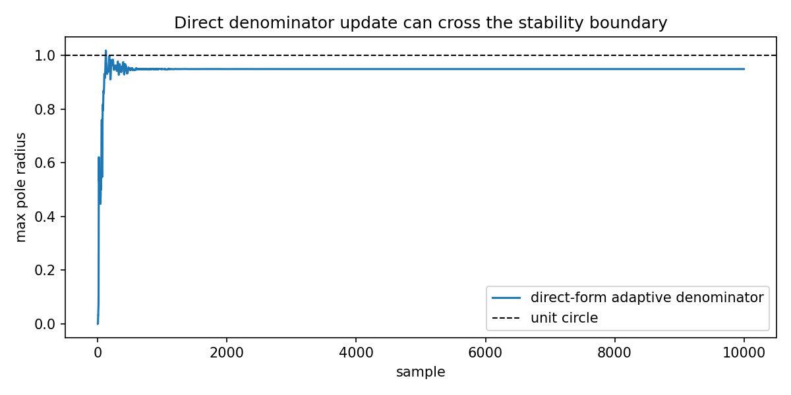

Why direct-form adaptive IIR updates can become unstable¶
Tutorial goal
Compare an unconstrained denominator update with bounded reflection-parameterized adaptation.
Note
New to the terminology? See the lattice DSP concept map and the causality/data-use guide for how online, offline, block, and MIMO examples should be read.
Context¶
FIR LMS already has a real learning-rate problem: the step size controls convergence, misadjustment, and divergence. Adaptive IIR keeps that tuning issue and adds a structural one, because denominator coefficients move the poles. This tutorial intentionally uses a simple aggressive direct-form update to show the failure mode, then compares it with an adaptive lattice model whose reflection coefficients remain bounded.
Key idea and equations¶
FIR LMS uses
so step-size selection is already part of the design. Direct-form IIR adaptation also
requires all poles of A(z) to stay inside the unit circle. In reflection form, the
scalar sufficient condition is simply
How to read the result¶
Look at the pole-radius figure. Values above 1 indicate instability in the direct denominator update; the lattice path enforces stability by construction.
Run command¶
python examples/stability_vs_direct_iir.py
Run status¶
Return code: 0
Captured stdout¶
target denominator: [1.0, 0.369, -0.55]
target max pole radius: 0.94873
direct-form max pole radius: 1.01772
direct-form final finite MSE: 5.42434811044316e-23
lattice learned reflection: [0.74967, -0.65528]
lattice learned denominator: [1.0, 0.25842, -0.65528]
lattice max pole radius: 0.94896
lattice final MSE: 0.012732257568221895
Takeaway: the lattice path may still need tuning, but denominator stability
is enforced by the reflection parameterization instead of hoped for after
a direct coefficient update.
A low finite-window MSE is not itself a stability certificate.
Figures¶
{kind=link}

stability_vs_direct_iir.png¶
Source code¶
1"""Why reflection-parameterized adaptive IIR is useful.
2
3This example compares two toy adaptive IIR identifiers:
4
51. a deliberately simple direct-form denominator update; and
62. `AdaptiveLatticeLadderNLMS`, whose denominator is represented by bounded
7 reflection/PARCOR coefficients.
8
9The direct-form update is intentionally aggressive so the pole radius can drift
10outside the unit circle. This illustrates that the direct denominator
11coefficients are numerically awkward stability coordinates: stability is a root
12location condition, not a per-coefficient box constraint.
13
14Even FIR LMS requires careful learning-rate selection: `mu` controls convergence
15speed, misadjustment, and possible divergence. Adaptive IIR keeps that tuning
16problem and adds a structural stability problem because denominator updates move
17poles.
18
19The lattice update keeps `|k_i| < 1 - margin` by construction. The example is
20therefore about parameterization and stability enforcement, not about claiming
21that this specific toy adaptation always has the lowest MSE.
22"""
23
24from __future__ import annotations
25
26import os
27from pathlib import Path
28
29import numpy as np
30
31from lattice_dsp import AdaptiveLatticeLadderNLMS, LatticeIIR, reflection_to_denominator
32
33
34def max_pole_radius(denominator: np.ndarray) -> float:
35 """Return max absolute pole radius for A(z)=1+a1 z^-1+...+aN z^-N."""
36
37 coeffs = np.asarray(denominator, dtype=float)
38 if coeffs.ndim != 1 or coeffs.size < 2:
39 return 0.0
40 roots = np.roots(coeffs)
41 return float(np.max(np.abs(roots))) if roots.size else 0.0
42
43
44def direct_form_identifier(
45 x: np.ndarray,
46 desired: np.ndarray,
47 *,
48 order: int = 2,
49 mu_num: float = 0.03,
50 mu_den: float = 0.08,
51 epsilon: float = 1e-8,
52) -> tuple[np.ndarray, np.ndarray, list[float]]:
53 """Tiny approximate-gradient adaptive direct-form IIR identifier.
54
55 This is not a recommended algorithm. It exists to show why unconstrained
56 denominator updates are dangerous in adaptive IIR examples.
57 """
58
59 b = np.zeros(order + 1, dtype=float)
60 a = np.zeros(order, dtype=float) # denominator is [1, a1, a2, ...]
61 x_hist = np.zeros(order + 1, dtype=float)
62 y_hist = np.zeros(order, dtype=float)
63 y = np.zeros_like(x, dtype=float)
64 error = np.zeros_like(x, dtype=float)
65 pole_radii: list[float] = []
66
67 for n, sample in enumerate(x):
68 x_hist[1:] = x_hist[:-1]
69 x_hist[0] = sample
70 y_n = float(np.dot(b, x_hist) - np.dot(a, y_hist))
71 e_n = float(desired[n] - y_n)
72
73 norm = float(np.dot(x_hist, x_hist) + np.dot(y_hist, y_hist) + epsilon)
74 b += (mu_num * e_n / norm) * x_hist
75 # Frozen-gradient update for y = b*x - a*y_history.
76 # This can move the denominator outside the stability region.
77 a -= (mu_den * e_n / norm) * y_hist
78
79 y[n] = y_n
80 error[n] = e_n
81 y_hist[1:] = y_hist[:-1]
82 y_hist[0] = y_n
83 pole_radii.append(max_pole_radius(np.r_[1.0, a]))
84
85 if not np.isfinite(y_n) or pole_radii[-1] > 1.25:
86 error[n + 1 :] = np.nan
87 pole_radii.extend([pole_radii[-1]] * (x.size - n - 1))
88 break
89
90 return y, error, pole_radii
91
92
93def artifact_dir() -> Path:
94 """Return the directory for generated figures/data."""
95
96 path = Path(os.environ.get("LATTICE_DSP_ARTIFACT_DIR", "reports/example-artifacts"))
97 path.mkdir(parents=True, exist_ok=True)
98 return path
99
100
101def main() -> None:
102 rng = np.random.default_rng(11)
103 x = rng.normal(size=10_000)
104
105 target_reflection = [0.82, -0.55]
106 target_numerator = [0.35, -0.05, 0.6]
107 desired = np.asarray(LatticeIIR(target_reflection, target_numerator).process(x), dtype=float)
108
109 target_den = np.asarray(reflection_to_denominator(target_reflection), dtype=float)
110 target_radius = max_pole_radius(target_den)
111
112 _, direct_error, direct_radii = direct_form_identifier(x, desired)
113
114 lattice = AdaptiveLatticeLadderNLMS(
115 initial_reflection=[0.0, 0.0],
116 initial_taps=[0.0, 0.0, 0.0],
117 mu_taps=0.06,
118 mu_reflection=0.0015,
119 margin=1e-4,
120 )
121 lattice_error = np.asarray(lattice.adapt_block(x, desired), dtype=float)
122 learned_den = np.asarray(lattice.denominator, dtype=float)
123
124 print("target denominator:", np.round(target_den, 5).tolist())
125 print("target max pole radius:", round(target_radius, 5))
126 print()
127 print("direct-form max pole radius:", round(float(np.nanmax(direct_radii)), 5))
128 print("direct-form final finite MSE:", float(np.nanmean(direct_error[-1000:] ** 2)))
129 print()
130 print("lattice learned reflection:", np.round(lattice.reflection, 5).tolist())
131 print("lattice learned denominator:", np.round(learned_den, 5).tolist())
132 print("lattice max pole radius:", round(max_pole_radius(learned_den), 5))
133 print("lattice final MSE:", float(np.mean(lattice_error[-1000:] ** 2)))
134 print()
135 print("Takeaway: the lattice path may still need tuning, but denominator stability")
136 print("is enforced by the reflection parameterization instead of hoped for after")
137 print("a direct coefficient update.")
138 print("A low finite-window MSE is not itself a stability certificate.")
139
140 try:
141 import matplotlib.pyplot as plt
142 except Exception:
143 return
144
145 fig, ax = plt.subplots(figsize=(8, 4))
146 ax.plot(direct_radii, label="direct-form adaptive denominator")
147 ax.axhline(1.0, color="black", linestyle="--", linewidth=1.0, label="unit circle")
148 ax.set_title("Direct denominator update can cross the stability boundary")
149 ax.set_xlabel("sample")
150 ax.set_ylabel("max pole radius")
151 ax.legend()
152 fig.tight_layout()
153 out = artifact_dir() / "stability_vs_direct_iir.png"
154 fig.savefig(out, dpi=150)
155 print(f"wrote {out}")
156
157
158if __name__ == "__main__":
159 main()